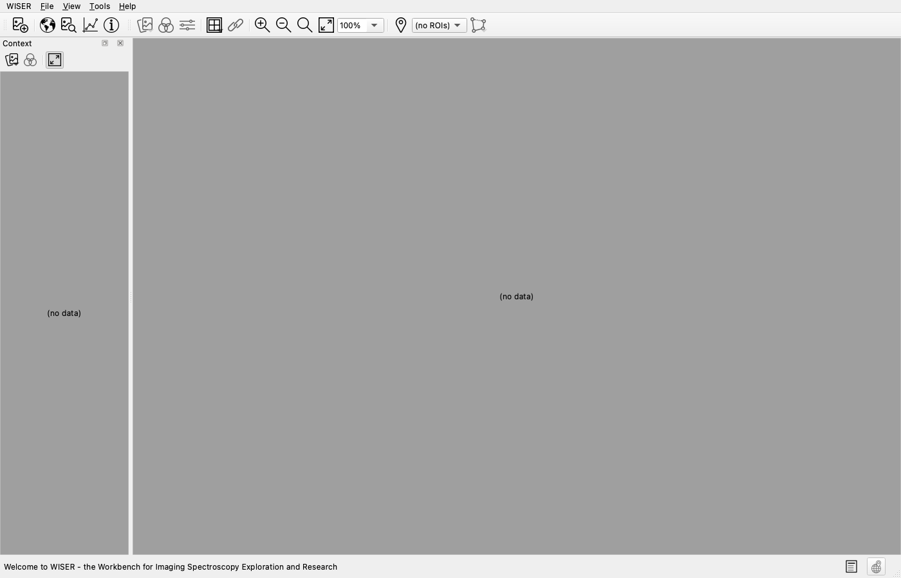
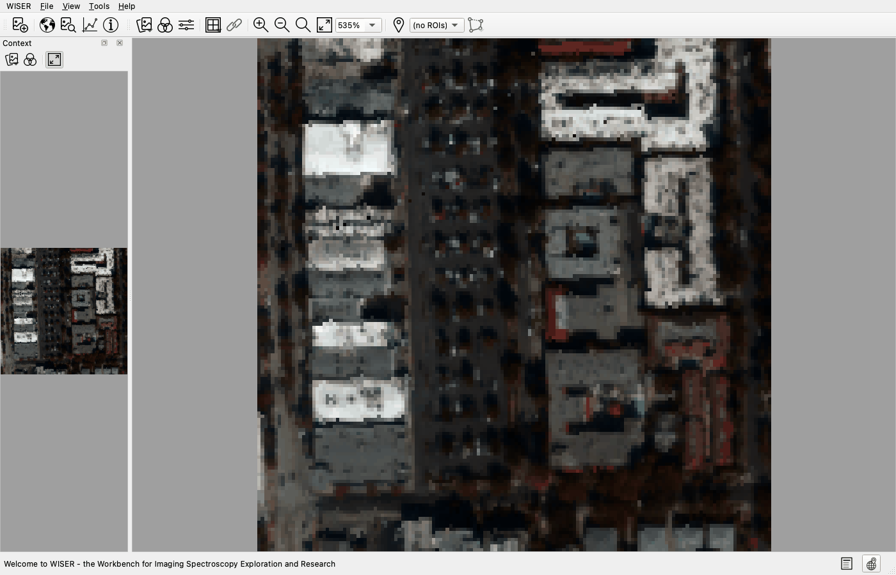
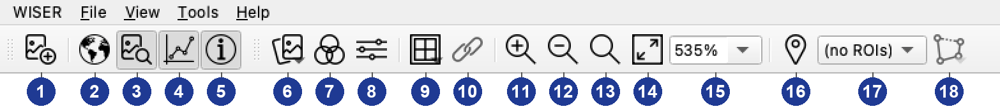
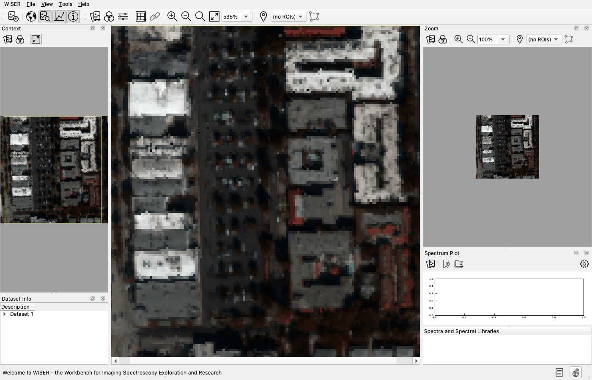
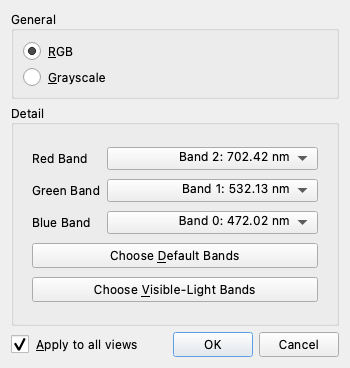
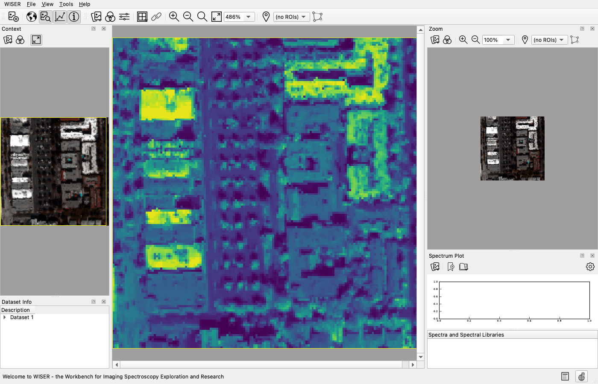
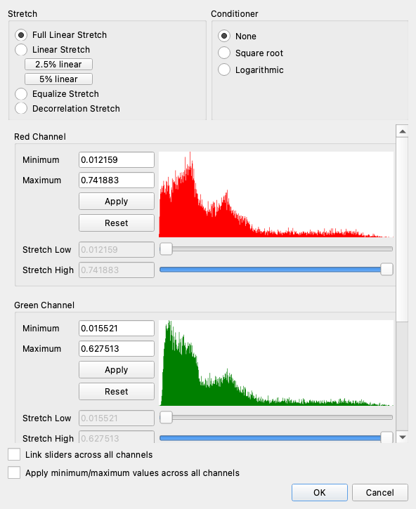
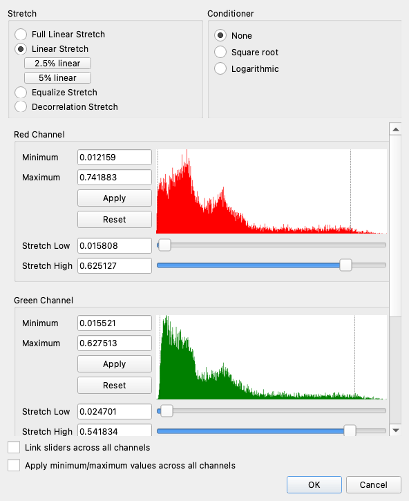
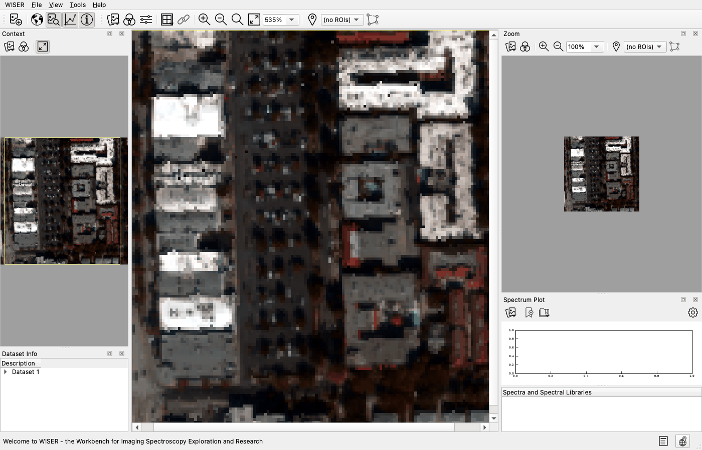
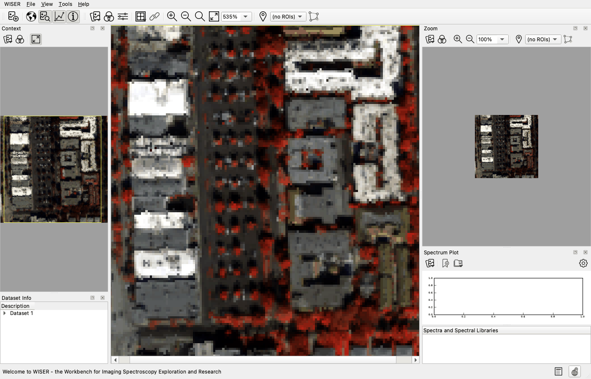

1. Your First Scene#
Goal: open an image, move around it, choose which bands you look at, and make the picture readable.
Data: src/test_utils/test_datasets/caltech_4_100_150_nm.hdr — a 150 × 150
pixel, 4-band AVIRIS subset over the Caltech campus. It ships with the WISER
source; nothing to download.
Reference: Interface Overview, Opening Data Files, Display and Contrast Stretch.
Start state: a fresh WISER launch. The window opens empty, with (no data) in both display panes.


The four bands in this scene are:
Band |
Wavelength |
What it sees |
|---|---|---|
0 |
472 nm |
Blue |
1 |
532 nm |
Green |
2 |
702 nm |
Red / start of the red edge |
3 |
853 nm |
Near-infrared |
WISER numbers bands from 0, and shows the number and the wavelength together in
every dropdown, like Band 2: 702.42 nm. Every step below refers to bands by
number. Tutorials 3–6 work on this same scene.
Step 1 — Open the image#
From the Main Menu at the top of the window, go to File and select Open… from the dropdown list. The tutorials shorten a menu path like this one to File ▸ Open…. You can also click Open image file, the leftmost button on the Main Toolbar.
In the file dialog, navigate to
src/test_utils/test_datasets/and selectcaltech_4_100_150_nm.hdr. Either the.hdrheader or the data file beside it works — WISER finds the other.Leave the file-type dropdown at the bottom of the dialog on All supported files, and click Open.
The scene loads and appears in the main window. WISER picks the bands to show from the header, so you get a color image straight away.


Check: you should now see the same color image in the main window and in the Context pane on the left — two columns of buildings with white and gray roofs, dark streets between them, and dark red-brown vegetation scattered through the scene. The image looks dark and low-contrast; Step 4 fixes that.
Step 2 — Turn on the rest of the workspace#
Everything in this tutorial lives on the toolbar row at the top of the window. The figure below numbers every button; the table names each one by its tooltip, which you can also read by hovering the button in the app. Later steps refer to buttons by these names.


# |
Button |
# |
Button |
|---|---|---|---|
1 |
Open image file |
10 |
Link view scrolling |
2 |
Show/hide the context pane |
11 |
Zoom in |
3 |
Show/hide the zoom pane |
12 |
Zoom out |
4 |
Show/hide the spectrum pane |
13 |
Zoom to actual size |
5 |
Show/hide dataset information |
14 |
Zoom to fit |
6 |
Select dataset to view |
15 |
Zoom level (no tooltip) |
7 |
Band chooser |
16 |
Add new Region of Interest |
8 |
Stretch builder |
17 |
ROI dropdown (no tooltip) |
9 |
Split/unsplit the main view |
18 |
Add selection to current ROI |
Buttons 2–5 are the pane toggles: each one shows or hides one pane. Click each one until all four panes are showing. Later tutorials call them by the pane’s name, for example the Spectrum Plot pane toggle.
Context — the whole scene, scaled to fit
Zoom — a magnified view around the last pixel you clicked
Spectrum Plot — the spectrum of whatever pixel you click
Dataset Info — header metadata for every loaded dataset
Click Zoom to fit (button 14). The whole scene scales to fill the main window, and the zoom percentage beside it updates to match.

Click a few pixels in the main window and watch what moves:
The yellow box in the Context pane marks what the main window is showing.
The Zoom pane re-centers on the pixel you clicked.
The status bar along the bottom reports that pixel’s data values for the displayed bands, its Pixel:
(x, y)position, and, because this scene is georeferenced, its Geo: coordinates.

Every pane is dockable. Drag a pane’s title bar to move it, or drag it out of the window to float it on a second monitor.
Check: you should now see all four panes around the image. Click a pixel in
the dark red-brown vegetation and the status bar reads three small values —
R:, G: and B: all below about 0.15. Click a white rooftop and all three
jump to roughly 0.4–0.7. The Geo: field reads close to
(34.14°N, -118.13°E) anywhere in the scene, which is the Caltech campus. WISER
shows west longitudes as negative °E values by default; the
geographic-coordinate settings can switch that to a positive °W display.
Step 3 — Choose the bands you display#
A display has three channels — red, green and blue — so it can show at most three bands at once, whatever the cube holds. WISER opened this scene with the default bands named in its header: band 2 in the red channel, band 1 in green, band 0 in blue. That is near-true-color: each channel carries the band closest to the color it drives. It is only “near” because 702 nm sits at the start of vegetation’s red edge rather than in the middle of the red. To change the bands:
Click Band chooser (toolbar button 7). The Band Chooser dialog opens.

The General section at the top sets the display mode: RGB or Grayscale. The Detail section below has one dropdown per channel (Red Band, Green Band and Blue Band), each listing every band in the scene by number and wavelength. The remaining controls, including applying a choice to every view at once, are described in Display and Contrast Stretch.
Now switch to a single band. Select Grayscale in the General section. The three channel dropdowns collapse into one, labeled Grayscale Band.
Set Grayscale Band to Band 3: 852.68 nm, tick Use a colormap and pick viridis from the dropdown beside it, then click OK.

Return to the color image: reopen the Band Chooser, select RGB, click Choose Default Bands, and click OK.


Check: in the near-infrared view you should now see the vegetation render
in the colormap’s middle greens, visibly brighter than the asphalt around it —
the reverse of the color image, where it was among the darkest surfaces. The
white rooftops stay the brightest patches at this wavelength too, in the
colormap’s yellows. Click a tree: the status bar reads a single Val: around
0.1–0.3, two to three times what the same canopy shows at 702 nm. After item 5,
the near-true-color image is back.
Step 4 — Make the image readable with a contrast stretch#
The image looks dark because a few extreme pixels take up most of the display range. Each display channel shows 256 brightness levels, and a contrast stretch decides which data values map to which level. This scene is reflectance, almost all of it between 0.01 and 0.8. When a scene opens, WISER maps each displayed band’s minimum to level 0 and its maximum to level 255, linearly; the dialog calls that Full Linear Stretch. A percent stretch instead clips a set share of the darkest and brightest values. The clipped pixels saturate at pure black or pure white, and the full display range is spent on the values in between. A stretch changes only what you see: spectra, band math and every analysis tool read the underlying data, never the stretched display values.
Click Stretch builder (toolbar button 8). The stretch dialog opens.

The dialog has four parts. Stretch at the top left sets the stretch type. Conditioner at the top right applies a transform to the data before the stretch. Below them is one section per displayed channel (Red Channel, Green Channel, Blue Channel), each with its own histogram, Minimum and Maximum boxes, and a Stretch Low and Stretch High box with a slider under each.
In the Stretch section, select Linear Stretch, then click the 2.5% linear button underneath it. WISER clips the darkest 1.25% and the brightest 1.25% of each channel and stretches what remains across the full display range.

To set a channel’s stretch by hand, type a value into its Stretch Low or Stretch High box, or drag the slider under it. The Minimum and Maximum boxes do something different: they leave values outside that range out of the histogram, and the stretch is then computed from what remains. See Display and Contrast Stretch.
Click OK to keep the stretch, or Cancel to discard it.



Display and Contrast Stretch describes every other stretch type and conditioner: Equalize Stretch, the Decorrelation Stretch (offered only for three-band RGB display), and the square-root and logarithmic conditioners.
Check: you should now see the image brighten sharply as soon as you click 2.5% linear, with the dialog still open. Streets and vegetation become legible, and the brightest rooftops saturate to pure white. Each channel’s Stretch Low and Stretch High boxes update to the clip values: Stretch High lands near 0.63 for red, 0.54 for green and 0.47 for blue.
Step 5 — Make a color-infrared composite#
Nothing restricts a channel to the band nearest its own color. The standard color-infrared composite shifts each band up one channel — near-infrared into red, red into green, green into blue — so vegetation’s strong near-infrared reflectance lands in the channel your eye reads as red.
Open the Band chooser again, with the display mode on RGB.
Set Red Band to Band 3: 852.68 nm, Green Band to Band 2: 702.42 nm, and Blue Band to Band 1: 532.13 nm, then click OK.
The stretch from Step 4 was computed for the previous bands, so refresh it: open Stretch builder, click 2.5% linear, and click OK.


Check: you should now see the vegetation render bright red. The rows of street trees between the buildings become red dots and the planted areas along the scene edges turn solid red, while roofs stay white-to-gray and asphalt a dark neutral gray.
Interpretation#
Three displays of one unchanged cube:
Near-true-color (2/1/0), stretched. Colors are roughly what a photo would show, and after the stretch the mid-range is readable. But everything beyond the clip points is saturated: two rooftops that both render pure white can differ substantially in the data. Read precise values from the status bar or the Spectrum Plot, not from screen brightness.
Single-band near-infrared. Shows where the scene is bright at 853 nm alone. Vegetation is far brighter here than in red, because chlorophyll absorbs red light while leaf interiors scatter the near-infrared. That contrast is the whole reason for looking at a band outside the visible range. Surfaces like white roofs are bright at every wavelength, so a single band cannot separate “bright in the infrared” from “bright everywhere”.
Color-infrared (3/2/1). Puts that comparison into hue, which the eye reads more easily than brightness: red means high near-infrared relative to the visible bands (vegetation), while materials that are bright or dark across all bands come out near-neutral. Tutorial 4 turns the same contrast into a number.
Troubleshooting#
The file will not open, or the wrong scene appeared. Select either the
.hdrfile or the data file next to it, but make sure it iscaltech_4_100_150_nm— the folder holds several similarly named fixtures. If a file still will not open, see Opening Data Files.A pane is missing, or docked somewhere odd. Toolbar buttons 2–5 (or the View menu) show and hide each pane. Drag a pane’s title bar to re-dock it. WISER restores your layout on the next launch, so an odd layout stays until you put it back.
The image went all black or all white after a manual stretch. The Stretch Low and Stretch High values are outside the data range. Select Full Linear Stretch, or click 2.5% linear again, to go back to a readable display. If you typed into Minimum or Maximum, click that channel’s Reset to clear them.
Known bug — swapped coordinate labels (#779). This scene reads correctly, but where a dataset’s CRS resolves to a standard EPSG geographic code, as most real-world GeoTIFF and UTM products do, the status bar prints the longitude with the
°Nlabel and the latitude with°E. The numbers are right; the labels are swapped. Check the values against the scene’s known location before trusting the labels.Known bug — error reopening the stretch dialog (#780). If you apply a stretch, then change the same view between Grayscale and RGB, reopening the stretch dialog raises an error. Reopen the dataset, or set your bands before stretching, until that is fixed.
What you can now do#
Open a dataset and show the four panes
Read pixel values and coordinates from the status bar
Choose display bands, in color or as one band with a colormap
Apply a percent stretch, and know that it changes only the display
Build a color-infrared composite
Next: Tutorial 2 — Reading Spectra — every pixel is a spectrum, and Tutorial 2 reads them.